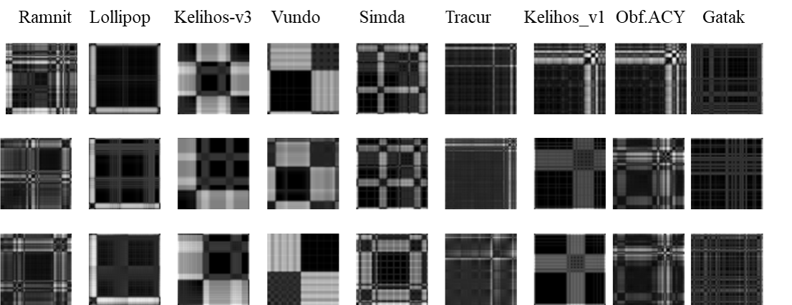

|
|
Yong WEI
PH.D. UNIVERSITY OF GEORGIA
PROFESSOR OF COMPUTER SCIENCE
DEPARTMENT OF COMPUTER SCIENCE
HIGH POINT UNIVERSITY
Office: Couch 151
Phone: (336)841-2881
Email: ywei(at)highpoint(dot)edu
My current research interests are in machine learning, computer vision and image processing. One of my recent work applies machine-learning algorithms
in the form of convolution neural networks (CNN) to dielectric spectroscopy (DS) measurement data to identify amino acid organic molecules and inorganic salts
solutions despite similarities in their spectroscopic responses over a temperature range of 20 to -60oC. Combining DS with machine-learning will greatly
facilitate more real-time decision-making of mobility systems for future exploratory endeavors in other worlds beyond Earth. My research projects are highly interdisciplinary
and range from computer vision, machine learning and their applications in medical image processing, computational chemistry, computational physics, geochemistry, and cybersecurity.
On Going Research Updates
- April, 2021: Our research projects on malware classification using deep learning models has been given
media highlight
on the Pittsburgh Supercomputing Center (PSC) of the NSF supported Extreme Science and Engineering Discovery Environment (XSEDE).
 src="index_files/Images/psc_report_2021.png" alt="PSC Report on Malware Classification" width="400" height="300" hspace="10">
src="index_files/Images/psc_report_2021.png" alt="PSC Report on Malware Classification" width="400" height="300" hspace="10">
- November, 2020: Paper "Machine Learning Analysis of the Thermodynamic Responses of In-situ Dielectric Spectroscopy Data in Amino Acids and Inorganic Electrolytes" is accepted by
the ACS Journal of Physical Chemistry B(h-index: 378, impact factor: 2.857).
 Dielectric spectroscopy (DS) is a robust electrochemical technique for biochemical, geobiological
and geochemical applications. Variations in the magnitude of the fraction of constituents can be an indication of changes in chemical and biological processes. Thus, it is possible to detect
and identify chemicals in the biochemical, geochemical and geobiological processes provided the magnitudes of fractions of constituents of the DS data can be estimated. However, estimating
such fractions of constituents in DS measurement of chemical mixtures is challenging, and usually inaccurate as well as time-consuming. Many factors (in addition to electrical noises) can
impact accuracy in DS measurement, including the effects of electrode polarization, and electrode chemiophysical processes associated with chemical or mechanical degradation. Noisy data impact
the estimation of fractions of constituents. All these result in poor chemical detection and identification precision. Complex problems such as this require innovative solutions. Machine learning
(ML) is a computational approach that can learn the inherent deep characteristics from measurement data to map the inputs to outputs without being explicitly programmed. ML is well suited for
complex problems such as detecting and identify chemicals using DS measurement, even if the measurements are noisy. A convolutional neural network (CNN) with channel-wise one-dimensional filters
is proposed to fulfill the task, using the DS data of amino acid and inorganic salt solutions. Experimental results show that the CNN with two convolutional layers and one fully connected layer
can effectively differentiate solutions containing amino acids from those containing salts in both the liquid and solid (water ice) states. To complement the experimental measurements and CNN
analysis, the diffusive behaviors of ions (K+, Cl- and OH-) were further studied with atomistic molecular dynamics (MD) simulations performed in this work as well as the quantum simulation
published in the literature. Combining DS with machine-learning techniques and simulations will greatly facilitate more real-time decision-making of mobility systems for future exploratory
endeavors in other worlds beyond Earth. This work is a collaboration with NASA JPL and Howard University.
Dielectric spectroscopy (DS) is a robust electrochemical technique for biochemical, geobiological
and geochemical applications. Variations in the magnitude of the fraction of constituents can be an indication of changes in chemical and biological processes. Thus, it is possible to detect
and identify chemicals in the biochemical, geochemical and geobiological processes provided the magnitudes of fractions of constituents of the DS data can be estimated. However, estimating
such fractions of constituents in DS measurement of chemical mixtures is challenging, and usually inaccurate as well as time-consuming. Many factors (in addition to electrical noises) can
impact accuracy in DS measurement, including the effects of electrode polarization, and electrode chemiophysical processes associated with chemical or mechanical degradation. Noisy data impact
the estimation of fractions of constituents. All these result in poor chemical detection and identification precision. Complex problems such as this require innovative solutions. Machine learning
(ML) is a computational approach that can learn the inherent deep characteristics from measurement data to map the inputs to outputs without being explicitly programmed. ML is well suited for
complex problems such as detecting and identify chemicals using DS measurement, even if the measurements are noisy. A convolutional neural network (CNN) with channel-wise one-dimensional filters
is proposed to fulfill the task, using the DS data of amino acid and inorganic salt solutions. Experimental results show that the CNN with two convolutional layers and one fully connected layer
can effectively differentiate solutions containing amino acids from those containing salts in both the liquid and solid (water ice) states. To complement the experimental measurements and CNN
analysis, the diffusive behaviors of ions (K+, Cl- and OH-) were further studied with atomistic molecular dynamics (MD) simulations performed in this work as well as the quantum simulation
published in the literature. Combining DS with machine-learning techniques and simulations will greatly facilitate more real-time decision-making of mobility systems for future exploratory
endeavors in other worlds beyond Earth. This work is a collaboration with NASA JPL and Howard University.
- October, 2020: Paper "Protein Corona on Gold Nanoparticles Studied with Coarse-Grained Simulations" is accepted by
the ACS LANGMUIR (h-index: 319, impact factor: 3.683). Understanding protein corona
formation in an aqueous environment at the molecular and atomistic levels is critical to applications such as biomolecule-detection and
drug delivery. In this work, we employed mesoscopic coarse-grained molecular dynamics (MD) simulations to study ovispirin-1 and lysozyme
protein coronas on bare gold nanoparticles.
- October, 2020: Paper "Machine Learning Analysis of the Thermodynamic Responses of In-situ Dielectric Spectroscopy Data in
Amino Acids and Inorganic Electrolyte" has been submitted to the ACS Journal of Physical Chemistry B(h-index: 378, impact factor: 2.857).
- September, 2020: Paper "Malware Classification using Recurrence Plots and Deep Neural Network" is accepted by
the 2020 IEEE International Conference on Machine Learning and Applications (ICMLA 2020).

In this work, we apply a novel technique used in dynamic and chaotic systems to represent the stochastic behavior of binary malware codes. Deep learning algorithms are then utilized
to identify the categories of malware files.
- September, 2020: The NSF Extreme Science and Engineering Discovery Environment (XSEDE) awarded us a research allocation
on the Pittsburgh Supercomputing Center (PSC)'s Bridges-AI GPU server. The allocation of high-end computational resources, visualization,
and storage by the XSEDE is done via a competitive process, designed in a similar fashion to the NSF peer-review system.
- August, 2020: Paper "Protein Corona on Gold Nanoparticles Studied with Coarse-Grained Simulations" has been submitted to
the ACS LANGMUIR (impact factor: 3.683).
- July, 2020: Paper "Malware Classification using Recurrence Plots and Deep Neural Network" has been submitted to the 2020 IEEE International Conference on Machine Learning and Applications (ICMLA 2020).
- July, 2020: A research allocation proposal has been submitted to XSEDE.
Selected Publications
- Y. Wei, K. Chin, L. Barge, S. Perl, N. Hermis and T. Wei, "Machine Learning Analysis of the Thermodynamic Responses of In Situ Dielectric Spectroscopy Data
in Amino Acids and Inorganic Electrolytes", ACS Journal of Physical Chemistry B, published, 2000.
[LINK]
- M. Sajib, P. Sarker, Y. Wei, X. Tao and T. Wei,
"Protein Corona on Gold Nanoparticles Studied with Coarse-Grained Simulations",
ACS LANGMUIR, published, 2020.
- S. Satoli, Y. Wei and S. Hampton,
"Malware Classification using Recurrence Plots and Deep Neural Network",
Proc. of IEEE International Conference on Machine Learning and Applications, published, 2020.
[LINK]
- Y. Wei, B. Xu, M. Ying, J. Qu and R. Duke,
"Two Dimensional Paraspinal Muscle Segmentation in CT Images",
Proc. of IEEE International Conference on Progress in Informatics and Computing, 2017.
[LINK]
- Y. Wei, S.M. Bhandarkar, K. Li and L. Ramaswamy,
"Video Personalization in Heterogeneous and Resource Constrained Environments",
Multimedia Systems Journal, 2011.
[LINK]
- Y. Wei, S.M. Bhandarkar and K. Li,
"Client-Centered Multimedia Content Adaptation",
ACM Trans. on Multimedia Computing, Communications and Applications (ACM TOMCCAP), Vol. 5, No. 3, Article 22, August, 2009.
[LINK]
- Y. Wei, S.M. Bhandarkar and K. Li,
"Video Personalization in Resourced-Constrained Multimedia Environments",
Proc. of the ACM Multimedia, pp. 902 - 911, 2007.
[LINK]
- Y. Wei, S.M. Bhandarkar and K. Li,
"Semantics-based Video Indexing using a Stochastic Modeling Approach",
Proc. of IEEE International Conference on Image Processing, 2007.
[LINK]
- Y. Wei, S.M. Bhandarkar and S. Chandra,
"A Client-side Statistical Prediction Scheme for Energy Aware Multimedia Data Streaming",
IEEE Trans. on Multimedia, Vol. 8, No. 4, pp. 866- 874, August, 2006.
[LINK]
- Y. Wei, H. Wang and S.M. Bhandarkar,
"Parallel algorithms for motion panorama construction",
Proc. of IEEE International Conference on Parallel Computing, 2006.
[LINK]
For HPU students: My research projects provide rich opportunities for students to conduct collaborative and independent research.
If you are interested in doing research in my lab, and are good at mathematics and programming, plesae contact me via email. Students with a background in physics, electrical and computer engineering, computer science, data science and mathematics are especially welcome!
Hobbies of mine include long distance shortwave listening (SWLing. Learn how to become a DX'er), classical music and fishing.
Last
updated: August 2021.
This
page is not a publication of High Point University (HPU) and HPU has not edited or examined the content of the page.
The author(s) of the page are solely responsible for the content.

|
|
|